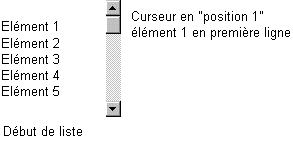
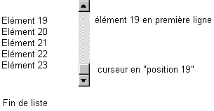
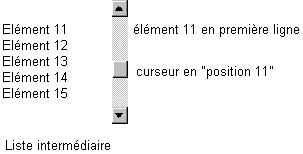
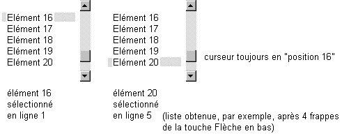
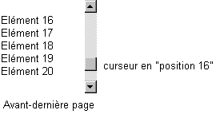
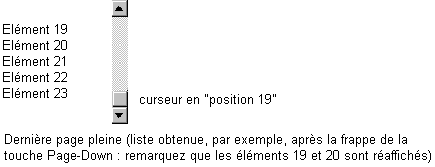

Le curseur DOIT toujours "pointer" l'élément affiché sur la PREMIERE ligne.
Ainsi, dans notre exemple, la liste contenant 23 éléments au total et la page affichant 5 éléments, le curseur ira de la "position 1" à la "position 19". En position 19 = 23-5+1, les éléments 19, 20, 21, 22 et 23 seront affichés, ce qui correspond effectivement à la fin de notre liste :



Remarquez que la gestion de l'ascenseur s'accompagne le plus souvent d'une gestion du clavier (déplacements dans la liste par les touches Flèche en bas, Flèche en haut, Page-Down et Page-Up - auxquelles s'ajoutent éventuellement les touches End et Home). Très souvent, le programme prévoie également la sélection d'une ligne. Il faudra alors :
1. Que la position du curseur dans l'ascenseur reste indépendante de la ligne sélectionnée :

2. S'arranger pour que la dernière page affichée soit toujours "pleine", quitte à ce que le dernier défilement de page soit réduit de quelques éléments :

